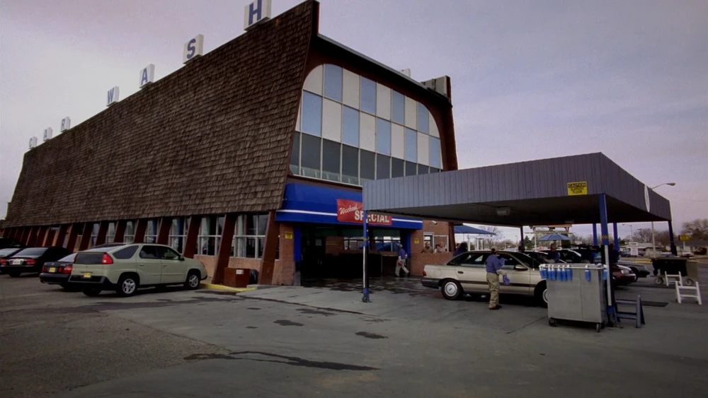
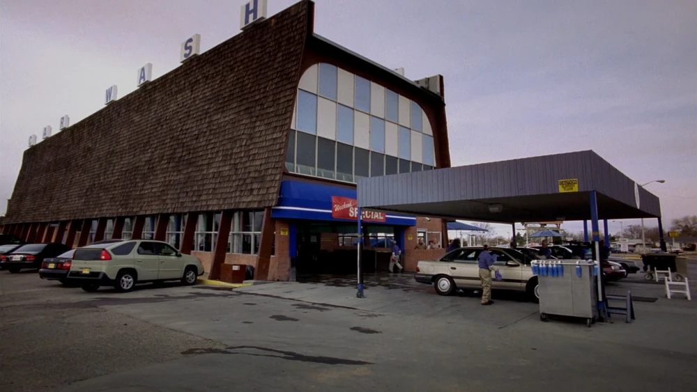
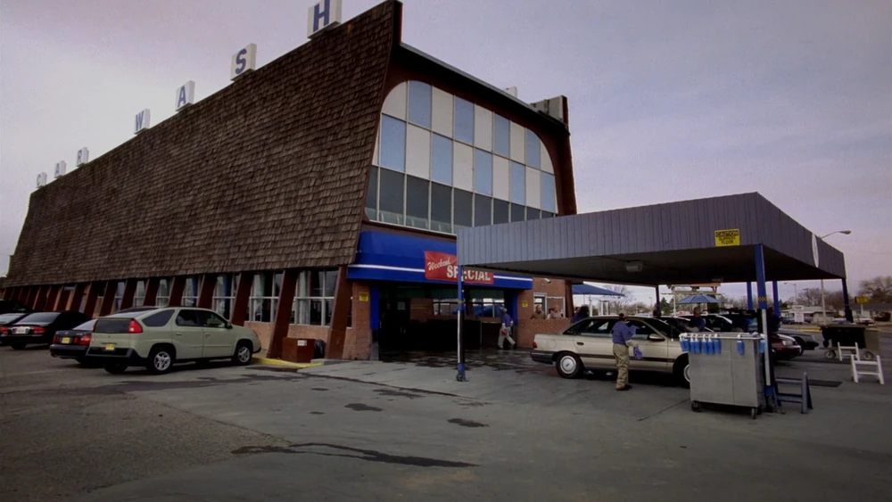

En Albuquerque, Nuevo México (donde se filmó la serie), hay recorridos turísticos por locaciones icónicas como la casa de Walter, Los Pollos Hermanos y el car wash.
Bryan Cranston y Aaron Paul tienen tatuado el logo de Breaking Bad como recuerdo del final de la serie.
La química real en la serie fue supervisada por un químico profesional para mantener cierta verosimilitud, aunque obviamente hay licencias dramáticas.
Tuco le causó una conmoción cerebral real a Aaron Paul. Raymond Cruz, el actor que dio vida a Tuco, el peligroso miembro del cartel mexicano al que se enfrentaron los protagonistas al principio de la serie, debía lanzar a Aaron Paul (Jesse) a través de una puerta mosquitera en una escena de acción. La fuerza del golpe fue tal que el actor quedó casi inconsciente, pero Cruz pensó que estaba actuando, así que siguió pateándolo y lanzándolo por los aires.
El episodio “Ozymandias” es considerado uno de los mejores de la historia de la televisión según muchos críticos.
Breaking Bad ayudó a redefinir la “era dorada” de la televisión, elevando el estándar narrativo de las series.

Críticas y Aclamación
Breaking Bad ha recibido una gran aclamación por parte de la crítica y muchos especialistas la consideran la mejor serie dramática televisiva de todos los tiempos. En el sitio Metacritic, que reúne todas las críticas especializadas, la primera temporada recibió un porcentaje de 74/100, la segunda de 85/100, la tercera de 89/100, la cuarta de 96/100 y la quinta de 99/100. El American Film Institute catalogó a Breaking Bad como una de las diez mejores series televisivas en 2010 y en 2011. La primera temporada de la serie cosechó críticas mayormente positivas. La crítica Linda Stasi del New York Post dio una reseña positiva y alabó en especial las actuaciones de Cranston y Paul y la química entre ambos. Robert Bianco de USA Today también resaltó las actuaciones de Cranston y Paul: "Hay humor en el programa, en especial cuando Walt trata de imponerle lógica al negocio y a su tonto aprendiz, un papel que Paul hace muy bien. Pero hasta sus escenas tienen suspenso, y el dúo descubre que matar a alguien, aunque sea en defensa propia, es un trabajo feo y complicado".
La segunda temporada también recibió buenas críticas. El crítico Ken Tucker de Entertainment Weekly dijo: "Bad es una metáfora fresca de una crisis de mediana edad: el cáncer y la violación de las leyes sacan a Walt de su estupor suburbano, para experimentar la vida nuevamente, arriesgarse, exponerse al peligro y hacer cosas que no creía que fuese capaz de hacer. Nada de esto funcionaría, por su puesto, sin la feroz autonomía del ganador del Emmy Bryan Cranston como el protagonista". Tim Goodman del San Francisco Chronicle dijo que "Los primeros tres episodios de la segunda temporada siguen en un alto nivel, sin errores evidentes. De hecho, pareciera que la visión de Gilligan acerca de Breaking Bad, que ya probó ser exitosa, hubiese vigorizado a todos los involucrados en el proyecto. Puedes sentir la madurez y la creciente ambición de cada episodio". El novelista de terror Stephen King halagó la serie y la comparó con Twin Peaks y con la película Blue Velvet. La tercera temporada siguió el rumbo de sus predecesoras. La revista Time proclamó "Es un drama que se quema lentamente en vez de explotar de una vez, y es mejor por ser así". Newsday declaró que Breaking Bad seguía siendo la mejor serie de la televisión y que continuaba siendo fiel a sí misma. Tim Goodman elogió el guion, las actuaciones y la cinematografía, resaltando en particular la mezcla de los paisajes desérticos con las situaciones más extrañas. Después de la emisión del capítulo final de la temporada, The A.V. Club publicó que la tercera temporada había sido "uno de los logros más dramáticos de la televisión". La cuarta temporada fue ampliamente aclamada por la crítica. The Boston Globe claificó a la serie como un "ejercicio tenso en desastre retenido" y aclamó el trabajo de los contribuyenes a la serie. La temporada fue considerada como una de las mejores temporadas de series de televisión en el 2011 por varios críticos. Mientras que la revista Time nombró la línea de Walter White "I am the one who knocks" (Soy yo quien llama a la puerta) como una de las mejores líneas de televisión del 2011. En general la temporada fue recibida positivamente tanto por la audiencia así como diferentes sitios de internet y reviewers de columnas de periódicos y revistas.
 
